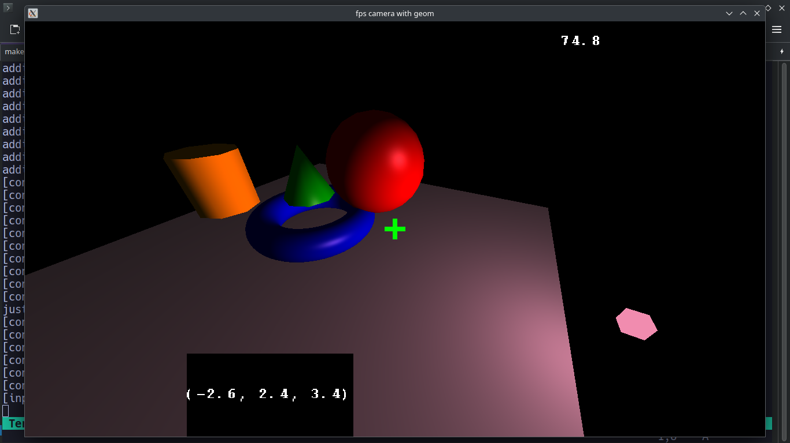

A collection of repositories which use each other to build up more complex programs.

deferred lighting (using submodule vertex geometry, no obj files required)particle systems, posiitonal sound, catmull rom spline interpolation and skeletal animationscripted events allow for timescale changesrealtime multiplayer gamplay from frag-z using tbx-engineNote: This website uses fsweb, use shift-space to search.
For a quick overview of what this is read below, for a more in-depth introduction please check out the guide.